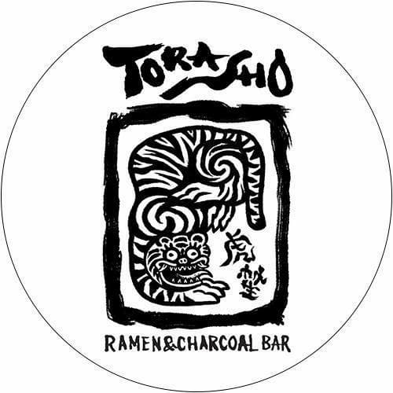

Menu
History

Chef
Credits
Credits
TORASHO RAMEN INTRODUCTORY VIDEO
TOP SINGAPORE FOOD & LIFESTYLE MEDIA REVIEW (March)
THE RANTING PANDA Food review
EXQUISITE TASTE MAGAZINE REVIEW/
THE BEST SINGAPORE FOOD REVIEW